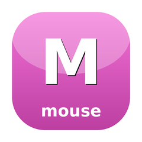

SugarMouse
Mark/Scan/Get (tag the output, scan the frame, look up the id) mouse hit-testing primitives plus the bubblezone-style Zones manager layer, in one package

SugarMouse finds clickable regions in a rendered terminal frame and resolves mouse events to them. You wrap each region in private-use sentinel tags, scan the frame to record each region's bounding box, then hit-test mouse events against those boxes. The primitive Scanner owns its own state, so no global wiring is needed. The Zones\Manager layer adds prefixed managers for nested components, plus hover, drag and multi-click trackers. It ports the Mark, Scan and Get pattern of lrstanley/bubblezone, and ZoneClickTracker addresses bubblezone issue #10.
Install
composer require sugarcraft/sugar-mouseThe manifest requires PHP ^8.3. The only package dependency is sugarcraft/sugar-core, which supplies the mouse message types and the width oracle.
Quickstart
use SugarCraft\Mouse\Mark;
use SugarCraft\Mouse\Scan;
use SugarCraft\Mouse\Scanner;
use SugarCraft\Mouse\ZoneClickTracker;
use SugarCraft\Mouse\MouseEvent;
// 1. Wrap interactive content with private-use sentinel tags.
$rendered = Mark::zone('btn-ok', ' OK ')
. Mark::zone('btn-cancel', 'Cancel');
// 2. Scan after rendering to populate the zone registry.
$scanner = Scanner::new()->scan($rendered);
// Never echo marked bytes. Print the stripped frame instead.
echo Scan::strip($rendered);
// 3. Reverse-lookup on mouse events. ' OK ' spans columns 1 to 6 of row 1.
$zone = $scanner->hit(4, 1); // Zone 'btn-ok'
// 4. A click fires only when the release's fresh re-hit agrees with the
// press zone on id AND box. Resolve each event against the frame it
// arrived in.
$tracker = new ZoneClickTracker();
$tracker->track(MouseEvent::press(4, 1), $scanner->hit(4, 1));
$click = $tracker->track(MouseEvent::release(4, 1), $scanner->hit(4, 1));
if ($click !== null) {
echo "Clicked zone: " . $click->zone->id;
}The Zones\Manager layer does the same job with a single object, and it is the form most applications use. Its scan() returns the display-ready frame, so the printed output and the measured output match:
use SugarCraft\Core\MouseButton;
use SugarCraft\Core\MouseAction;
use SugarCraft\Core\Msg\MouseMsg;
use SugarCraft\Mouse\Zones\Manager;
$z = Manager::newUnprefixed();
$frame = $z->mark('btn:ok', ' OK ') . ' ' . $z->mark('btn:cancel', 'Cancel');
// Scan once before printing. The manager records each marker's box and
// returns the frame with the markers removed.
echo $z->scan($frame);
// A click at column 5, row 1 lands inside the six-cell " OK " button.
$click = new MouseMsg(5, 1, MouseButton::Left, MouseAction::Press);
if ($z->get('btn:ok')?->inBounds($click)) {
// Handle the OK button.
}Concepts
There are two layers, and both work on the same sentinel tags. The primitive layer is Mark, Scan and Scanner, plus the click and selection state machines. It tells you what geometry a frame holds, and it never touches the registry of a shared manager. The Zones layer wraps the primitives in a Manager that owns a registry, stamps prefixed ids, and routes MouseMsg values into a sugar-core Model.
A zone is a one-based rectangle of terminal cells, with columns counted from the left and rows from the top. A tag is two three-byte private-use codepoints, U+E000 to open and U+E001 to close. Its id is one of the characters A-Z a-z 0-9 . _ : -. Scanning reads the tags to compute each zone's box and never changes the string. Stripping the tags from the bytes you print is your job, and Scan::strip() or Manager::scan() does it for you.
A zone that paints no cell has no box, so it cannot take a click. Zones never overlap a neighbor's clicks unless their boxes do, and the smallest box wins when two overlap.
Tasks
Make a list of selectable rows
Mark each row with its own id, and scan the full frame once. Resolve each click through allInBounds() or anyInBounds(). examples/zones-list-default.php adds a keyboard path that drives the same cursor with Down and Enter.
use SugarCraft\Mouse\Zones\Manager;
$z = Manager::newUnprefixed();
$rows = '';
foreach (['alpha', 'beta', 'gamma'] as $i => $name) {
$rows .= $z->mark('row:' . $i, $name) . "\n";
}
echo $z->scan($rows);Isolate nested components
Give each component its own prefixed manager, so identically named ids cannot shadow each other. Use newPrefix() for every sub-tree. Pass the full root frame to every manager's scan(), not each sub-tree's own output, because a nested zone's box depends on the outer layout. examples/zones-nested-components.php runs two panes side by side.
use SugarCraft\Mouse\Zones\Manager;
$left = Manager::newPrefix('left.');
$right = Manager::newPrefix('right.');
$frame = $left->mark('ok', 'OK') . ' ' . $right->mark('ok', 'OK');
echo $left->scan($frame); // records only left.* zones
$right->scan($frame); // records only right.* zones from the same frameTrack hover, drag and double clicks
Each tracker takes the manager it hit-tests against, and each one's update() returns the messages it produced. Enable the matching mouse reporting modes first, as the Configuration section explains.
use SugarCraft\Mouse\Zones\Manager;
use SugarCraft\Mouse\Zones\ZoneHoverTracker;
use SugarCraft\Mouse\Zones\DragTracker;
use SugarCraft\Mouse\Zones\MultiClickTracker;
$z = Manager::newUnprefixed();
$hover = ZoneHoverTracker::new($z);
$drag = DragTracker::new($z);
$clicks = MultiClickTracker::new($z, 500);
// Inside Model::update(), feed each MouseMsg to the trackers.
// $hover->update($msg) yields ZoneEnterMsg and ZoneExitMsg.
// $drag->update($msg) yields the three ZoneDrag*Msg values.
// $clicks->update($msg) yields DoubleClickMsg and TripleClickMsg.Select text across a region
Selection is the press, drag and release state machine for text selection, bounded to a region. Call range() to read the normalized, inclusive range, and SelectionRange::extract() to read its text. The range is row first, and every cell is one-based.
use SugarCraft\Mouse\Selection;
$selection = Selection::new(1, 5, 1, 40); // rows 1-5, columns 1-40
$selection->begin(2, 4); // press on row 2, column 4
$selection->dragTo(3, 10); // drag to row 3, column 10
$range = $selection->range();
$lines = ['first line of text', 'second line of text', 'third line of text'];
$picked = $range?->extract($lines) ?? '';API reference
The primitive and Zones tables below list the public surface. Deprecated aliases are marked as such. They keep working, and each one delegates to its replacement.
| Class | Method | Description |
|---|---|---|
| Mark | Mark::zone(string $id, string $content) | Wrap content in the sentinel tags. Equivalent to Mark::new()->wrap(). |
| Mark | Mark::new() / Mark::disabled() / withEnabled(bool) / wrap(string $id, string $content) | Instance form. A disabled mark returns the content unwrapped. The id is validated either way. |
| Mark | Mark::isValidId(string) | Whether an id is one that Mark encodes and Scan decodes. Ids are at most MAX_ID_BYTES (256) bytes. |
| Mark | Mark::untrusted(string) / Mark::escapeForMessage(string) | Sweep the sentinel bytes from untrusted text. Escape a hostile id into printable ASCII for an error message. |
| Scan | Scan::parse(string $rendered, ?int $width = null) | Decode the frame into a map of id to Zone. Throws on a duplicate id in one render. |
| Scan | Scan::strip(string $rendered) | Remove the well-formed tags and keep the text, byte for byte. |
| Scanner | Scanner::new() / scan(string $rendered, ?int $width = null) | Create an empty scanner, then parse a frame into its registry. Returns the scanner. |
| Scanner | get(string $id) / hit(int $col, int $row) / all() | Look up a zone by id, reverse-look up the zone at a cell, or read every zone. |
| Scanner | idsStartingWith(string $prefix) / clear() | The zones whose ids begin with a prefix, or an empty registry. prefixed() is a deprecated alias of idsStartingWith(). |
| Zone | Zone::new(string $id, int $startCol, int $startRow, int $endCol, int $endRow) | A zone with its one-based bounding box. |
| Zone | inBounds(MouseEvent) / pos(MouseEvent) / width() / height() / isZero() | Test a point, read its offset from the top-left, read the size, or check for a never-painted zone. |
| MouseEvent | press(int $x, int $y, int $button = 0) / release(...) / drag(...) / scroll(...) | Build an event from its action. The button defaults to the left button. |
| MouseAction | Press, Release, Drag, Scroll | The action enum. The button constants include BUTTON_WHEEL_UP and BUTTON_WHEEL_DOWN. |
| ZoneClickTracker | ZoneClickTracker::new() / track(MouseEvent, ?Zone $hitZone = null) | Feed an event. A completed click returns a ClickResult, and anything else returns null. |
| ZoneClickTracker | observeRelease(MouseEvent, ?Zone = null) / setPressZone(Zone, int $button) | Check a release without completing a click. setPressZone() is deprecated. It is the two-call form of track(), kept for callers that cannot pass the zone with the press. |
| ClickResult | ClickResult::new(Zone, int $button) / $zone / $button | A completed click. |
| Selection | Selection::new(int $rowFrom, int $rowTo, int $colFrom, int $colTo) | A text-selection state machine bounded to a region. |
| Selection | begin(int $row, int $col, bool $shiftExtend = false) / dragTo(int $row, int $col, bool $shiftExtend = false) | Press and drag, with rows first. Each returns whether the state changed. |
| Selection | beginEvent(MouseEvent) / dragToEvent(MouseEvent) | The same press and drag, taking a mouse event. |
| Selection | range() / clear() / active() / dragging() | The current SelectionRange, reset, and whether a selection or a drag is in progress. |
| SelectionRange | SelectionRange::new(int $rowA, int $colA, int $rowB, int $colB, ?int $edgeFrom = null, ?int $edgeTo = null) | A normalized, inclusive range. The constructor takes its arguments row first. |
| SelectionRange | spanOnRow(int $row) / cellContains(int $row, int $col) / cells() / extract(array $lines) | The columns a row covers, a point test, a generator over every cell, and the selected text. |
| Sentinel | Sentinel::OPEN / Sentinel::CLOSE | The two codepoints, which alias sugar-core's Sanitize constants. |
| Class | Method | Description |
|---|---|---|
| Manager | Manager::newUnprefixed() | A fresh manager with no id prefix, independent of every other instance. It is not the shared default, which is Zones::defaultManager(). newGlobal() is a deprecated alias. |
| Manager | Manager::newPrefix(string $prefix = '') / prefix() | A manager whose mark() stamps the prefix onto each id. It skips ids outside the prefix when it scans. |
| Manager | mark(string $id, string $content) | Wrap rendered output in a zone marker. |
| Manager | scan(string $rendered, ?int $width = null) | Record the zones into the registry, strip the markers, and return the frame. Ids re-recorded in a scan replace their earlier boxes, and absent ids persist. |
| Manager | get(string $name) / all() / zoneAt(int $col, int $row) | Look up a zone by name, read every zone, or hit-test a cell without a mouse message. |
| Manager | anyInBounds(MouseMsg) / allInBounds(MouseMsg) | The smallest-area zone under the event, or every covering zone, smallest first. |
| Manager | anyInBoundsAndUpdate(Model, MouseMsg) | Route a hit into a Model as MsgZoneInBounds. Otherwise, forward the raw event. |
| Manager | idsAbsentFromFrame(iterable $scannedIds) | The registered ids that a frame did not paint. Use it to prune stale zones. |
| Manager | clear(?string $id = null) / close() / setEnabled(bool) / isEnabled() | Drop one zone or all of them, switch the manager to pass-through, or toggle its enabled state. |
| Manager | motionTrackingAnsi(bool $on) | Return the paired CSI ?1003h ?1006h enable bytes, or the LIFO disable bytes. It emits nothing itself. setMotionTracking() is a deprecated alias. |
| Zones | defaultManager() / setDefaultManager(?Manager) | The shared manager that the static facade routes through. |
| Zones | mark / scan / get / clear / close / setEnabled / isEnabled / newPrefix / anyInBounds / anyInBoundsAndUpdate | Static forwarding to the default manager. |
| Zone | fromMouseZone(MouseZone) / inBounds(MouseMsg) / pos(MouseMsg) / width() / height() / isZero() / contains(Zone) | The hit-testable adapter over the primitive zone. pos() returns [col, row] from the top-left, zero-based. |
| ZoneHoverTracker | ZoneHoverTracker::new(Manager, ?string $currentZoneId, ?string $pendingEnterId) / update(MouseMsg) | Track the hovered zone. update() returns the enter and exit messages for a boundary crossing. |
| ZoneHoverTracker | currentZone() / currentZoneId() / pendingEnter() / withManager(Manager) / withCurrentZoneId(?string) | The hovered zone or its id, the enter owed after a crossing, a rebind, and a restore from a serialized id. |
| DragTracker | DragTracker::new(Manager, ?string $originZoneId, ?string $currentZoneId, ?MouseButton $dragButton) / update(MouseMsg) | Track one drag across zones. update() returns start, move and end messages. |
| DragTracker | originZone() / currentZone() / originZoneId() / currentZoneId() / dragButton() / withManager(Manager) / withZoneIds(?string, ?string) | The zones and ids of the open drag, the button it was pressed with, a rebind, and a restore from ids. |
| MultiClickTracker | MultiClickTracker::new(Manager, int $clickIntervalMs = 500, ?callable $now = null) / update(MouseMsg) | Track double and triple click streaks. The clock argument steps time in tests. ClickCounter is a class alias. |
| MultiClickTracker | clickCount() / withManager(Manager) | The current streak, where zero means no streak, and a rebind that carries the streak. |
| Messages | ZoneEnterMsg, ZoneExitMsg, ZoneDragStartMsg, ZoneDragMoveMsg, ZoneDragEndMsg, DoubleClickMsg, TripleClickMsg, MsgZoneInBounds | Each carries the zone it concerns as zone. Drag messages also carry originZone and currentZone. A drag ends with the zone under the release cursor, or null outside every zone. |
Configuration and options
There is no configuration file and no environment variable. The settings are constructor arguments, the manager's prefix and enabled state, and the terminal's mouse reporting mode, which the host must enable.
| Option | Where | Default | Effect |
|---|---|---|---|
| Id prefix | Manager::newPrefix($prefix) | '' | Namespaces every id the manager stamps. Use one per component. |
| Enabled | setEnabled(bool) | on | A disabled manager's mark() returns the content verbatim, and its scan() passes the frame through unchanged. The id is still validated, so turning the manager off cannot let an illegal id through. |
| Click interval | MultiClickTracker::new($manager, $clickIntervalMs) | 500 ms | The longest gap between presses that still counts as one streak. Widen it for users who need more time. |
| Id length | Mark::MAX_ID_BYTES | 256 | Longest id that Mark encodes and Scan decodes. |
| Content size | Mark::MAX_CONTENT_BYTES | 1048576 | Largest chunk that Mark wraps. |
| Width | scan($rendered, ?int $width) | none | Clips the scanned frame to a viewport, so a zone past the right edge is dropped. |
Mouse-tracking modes
This library never writes to the terminal. The host must enable the reporting modes before any tracker can see an event, and each tracker needs a different mode. Whoever enables a mode owns disabling it on every exit path.
| Mode | Reports | Needed by |
|---|---|---|
1000 | Press, release and wheel | ZoneClickTracker and MultiClickTracker, for clean clicks |
1002 | Press, release and drag, which also covers motion with a button held | DragTracker boundary crossings while a button is pressed |
1003 | All motion, with or without a button held | ZoneHoverTracker, for enter and exit with no press |
1006 | SGR extended coordinates, shaped CSI < b ; x ; y M or m | Any mode above column or row 223, where the legacy encoding saturates |
Manager::motionTrackingAnsi(true) returns \x1b[?1003h\x1b[?1006h, and the matching disable is the reverse order. The mode 1000 alone reports nothing this library can read. The reader expects the SGR form, so turn 1000 on with its 1006 companion. 1002 and 1003 are the xterm family. Konsole has no 1003, and tmux re-encodes reports, so design for a fallback when motion reports never arrive. Strip the modifier bits, which are 4 for shift, 8 for alt and 16 for ctrl, before you compare button numbers. Bit 32 marks a held-drag motion.
Keys and input
The library reads no keyboard input. Every mouse action in a zone-driven interface needs a keyboard route to the same command. Tab and Shift+Tab, or the arrow keys, move focus across the zones in reading order, and Enter fires the focused one. Feed the keyboard route into the same handler that a click calls. The Accessibility section lists the full parity rules.
Theming and styling
The library emits no SGR, so styling is the host's job. To highlight a selection, call Selection::range() and test each cell with SelectionRange::cellContains(), then apply your own style to those cells. Hover and focus highlights work the same way: keep the tracker's current zone, and restyle that zone's cells when you render. The marker tags carry no color, and they are zero-width to the scanner, so they never change a style or a layout.
Accessibility
Zone tags are private-use codepoints. Screen readers announce them as placeholder glyphs or as unknown-character noise, so print only the stripped frame. At the Zones\Manager layer, scan() returns it display-ready. At the primitive layer, Scan::strip() removes the tags, because Scanner never modifies the string. Never echo marked bytes.
The pointer-only affordances need keyboard twins. Hover needs a focus-revealed twin, which shows on keyboard focus what ZoneEnterMsg shows on pointer entry, and hides on blur. Drag needs a no-motion fallback, a select-then-choose flow, because terminals without 1002 or 1003 report no crossings. Never gate a command on tracker state alone, such as the hovered zone or a click streak. Give the multi-click gesture a single-action twin, and expose clickIntervalMs as a setting, because the 500 ms default is a pointer-timing tolerance.
Examples
Each example is a standalone script under examples/. It runs on built-in input and prints a frame, so no terminal is needed to run it.
examples/zones-buttons.phplays out a button row withManager::newUnprefixed(), marks and scans it, then resolves clicks to zone ids.examples/zones-list-default.phprenders a selectable list, resolves click-to-focus, and runs a scripted keyboard twin that drives the same cursor with Down and Enter.examples/zones-nested-components.phpruns twoManager::newPrefix()managers for the left and right panes, so their identically named ids stay apart.
php examples/zones-buttons.php
php examples/zones-list-default.php
php examples/zones-nested-components.php
Two clickable buttons
A button row resolves clicks to zone ids.
List with zones
A selectable list with click-to-focus and a keyboard twin.
Nested components
Two prefixed managers keep identically named ids apart.Testing
composer install
vendor/bin/phpunitThe suite pins the scanner grammar in ScanTest, and the malformed-markup rules in ScanMalformedMarkupTest. ScannerTest covers the registry, MarkTest the encoding, and SelectionTest and SelectionRangeTest the selection machine. ZoneClickTrackerTest covers the click dedup, and the tests/Zones directory covers the managers and trackers. LangTest checks the refusal messages, and FactorySurfaceTest checks the factory methods.
Troubleshooting and FAQ
Clicks never fire
The terminal is not reporting presses. Enable 1000 with its 1006 companion, and check that your input layer decodes the SGR form. Without the companion, the reports arrive in a form this library cannot read.
Hover never fires without a press
Hover needs all-motion reporting, 1003. Mode 1000 reports only presses, so enter and exit fire on a press but not on plain motion. Design a fallback for terminals that send no motion reports.
Escape sequences or sentinel bytes appear on screen
The marked frame was echoed. Print the output of scan() or Scan::strip(), which removes the tags, and never the marked string itself.
get() returns null for a zone I rendered
The zone is either not scanned yet, or it painted no cell. A zone whose content is empty, or whose box is clipped away by scan()'s width, is never recorded. Scan the full root frame after you render it.
Two components respond to the same click
Their ids collide in one manager. Give each sub-tree its own Manager::newPrefix(). Scanning a sub-tree on its own also shifts the boxes, so scan the full root frame once.
A zone disappears when a tag is unbalanced
An orphan close or an unclosed open is skipped, and it records no zone. Balance each open and close pair, and check the id against Mark::isValidId(). An id with a space, an escape or a non-ASCII byte is not a valid id.
Columns drift on CJK or emoji text
Scanning measures cells with sugar-core's Width::string(), which counts wide East Asian characters as two columns. Clusters such as ZWJ emoji and flags depend on the host's grapheme support. Install ext-intl on machines where the layout must be pinned.
Upstream mapping
The primitive layer follows the Mark, Scan and Get pattern of bubblezone. The mapping below notes where the port differs.
| Upstream concept | SugarCraft | Notes |
|---|---|---|
| Mark a zone | Mark::zone(), Manager::mark() | The same wrap-and-scan pattern, with sentinels in the private-use area. |
| Scan the frame and look up a zone | Scanner::scan(), Manager::get() | An unknown id returns null, not a zero zone. |
| Press and release pairing | ZoneClickTracker | Addresses bubblezone issue #10. A click fires only when the release re-hits the press zone. |
| Prefixed managers | Manager::newPrefix() | Keeps nested components apart. |
| Text selection | Selection, SelectionRange | Row-first addressing, with the one-based inclusive range. |
Architecture and sentinel design
The sentinel tags are the trust boundary. Ordinary ASCII UI text cannot carry them, so normal rendering cannot forge a zone boundary. Pasted text and other untrusted input can carry them, though, so sweep untrusted input before you compose it into a marked frame. Mark::untrusted() strips the sentinels, and Sanitize::untrustedForMarkedFrames() in sugar-core also strips ANSI. The two sweeps are different.
The scanner bounds its work. Mark caps ids at 256 bytes and content at 1 MiB, so an oversized span is rejected before any substring is built. Parsing has no cap of its own, so feed it only frames you expect to be terminal-sized. A lone sentinel costs its own three bytes, and the text after it is kept and measured as visible text, so a stray tag cannot move the zones around it.
A zone that spans several rows is stored as the smallest bounding box that holds every cell it painted. The box is a union rectangle, so a gap next to a short line still counts as inside. Hit-testing multi-line content is therefore approximate, by design.
Coordinates are (col, row) everywhere, except for the selection API, which is row first, as a text selection is addressed like a file. Every cell is one-based. SelectionRange::new() refuses a zero or negative coordinate at construction. Zone::new() stores its box as given, and Selection::new() floors its region into the terminal grid, so validate untrusted coordinates before you pass them to either. A lone carriage return returns to column one on the same row, the way a terminal does.
Changelog and versioning
The renamed and superseded names stay as deprecated aliases, which include newGlobal(), setMotionTracking(), prefixed(), setPressZone() and ClickCounter. Their removal is a deliberate backward-compatibility decision, and each alias delegates byte for byte to its replacement.
Source
Related
- sugar-widgets and sugar-gallery drive
Zones\Managerinstances. - sugar-core supplies the mouse messages, the sentinel constants and the width oracle.